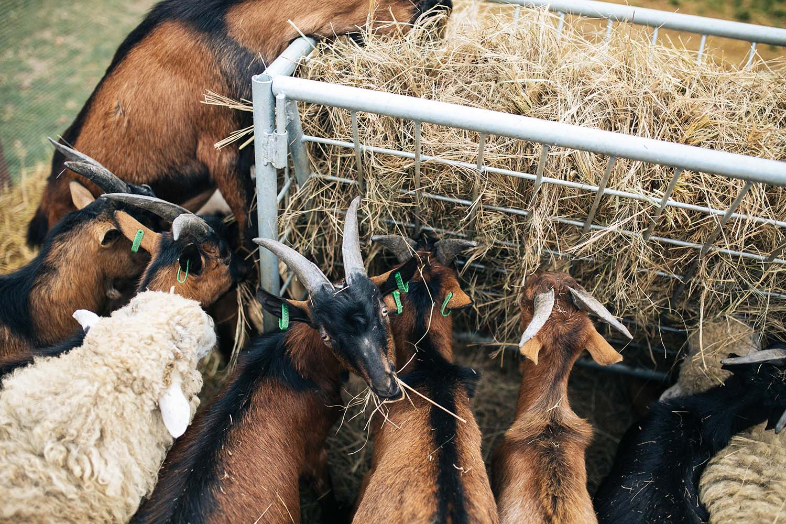
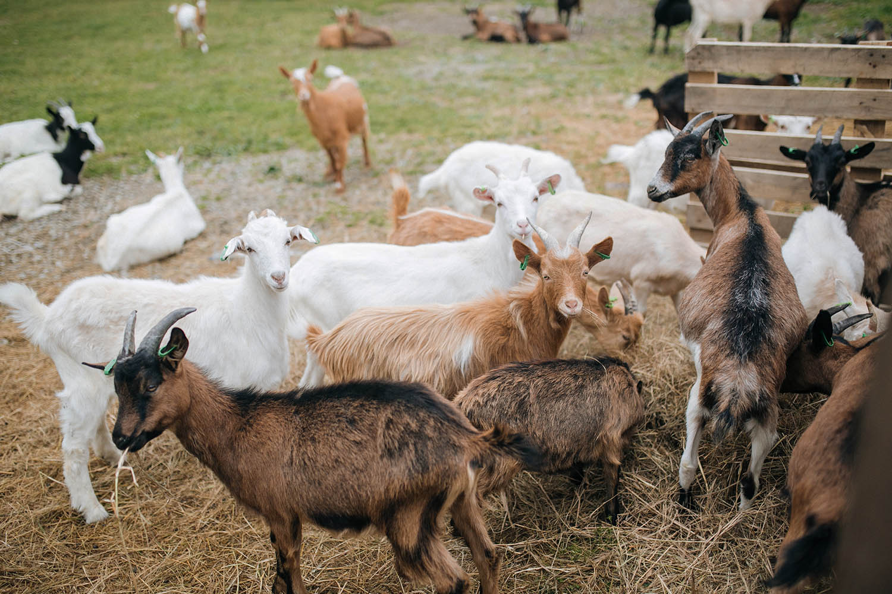

 The Family Farm ‘Mukko’ offers a wide variety of cheese: classic Dutch cheese, goat gouda, classic creamy cheese, soft cheese from cows milk as well as cheeses containing herbs, truffle or alcohol, and more. Nazar mentions that they instantly came up with the name for the brand: — “Mu” (moo) stands for a cow, “ko” means a goat (“koza” in Ukrainian), and “k” is for company (“kompaniia” in Ukrainian). It took fifteen minutes to arrange these parts into ‘Mukko.’ A dairy farm in Prykarpattia. A goat, a cow, the mountains, the forest. All the things we see from the windows of our house. Nazar and his relatives learned about farming and cheese making in the Netherlands and in France over several months: — I went to learn together with our dairy production technician and the manager of the milk processing facility, a close friend of mine. We learned all of the processes and practiced a lot — we cleaned the floors and made cheese. We learned so much, and now we put it all into practice. Eventually, the Kmits and Bernar went their separate ways. Bernar wanted to make French cheeses, but they favored Dutch cheeses, which are more popular in Ukraine. Today, ‘Mukko’ is a fully integrated manufacturer. The goat farm comprises 10 hectares (24.7 acres) and is home to 1370 goats. Next to the farm is a milk processor with the processing capacity of 30 tonnes milk per day. 15 kilometers from Uhersko, in the village of Falysh is a cattle farm with a herd of 400 cows. Besides goats and cows, the Kmits also keep 40 sheep — half of which they were given by a businessman from Lviv who didn’t need them anymore. For now, the sheep just live alongside the other animals, perhaps in a year or two the Kmits will also create a sheep farm.
